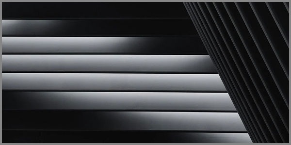

21. Խոսքերի Միջև Պահված Լռության Երևակումը
 |
Կան մտքեր, որոնք երբեք չեն արտասանվում։ Դրանք բույն են դնում խոսքերի միջև ընկած նեղ տարածություններում՝ որպես անավարտ արձագանքների սպասում, որպես շշուկ, որ չի հասնում մեր ականջին, բայց ծնվում է անմիջապես՝ գիտակցության մեջ։
Այս ընթացքը փորձ է ոչ թե լռությունը նկարագրելու, այլ երևակելու։ Սա մի գեղագիտություն է, որն ավելի նման է երաժշտություն լսելուն, երբ գործիքները դադարել են նվագել, և օդի մեջ մնացել է միայն նրանց անլսելի հնչյունների էությունը՝ հիշեցնելով մի հոգեհարազատ և անտեսանելի թրթիռ։
Լռությունը երբեք դատարկ չէ։ Այն լի է հազարավոր չարտասանված բառերով։ Այն խորիմաստ է, և հաճախ միայն լռելով ենք մենք կարողանում արտահայտել այն ամենը, ինչ բառերը չեն կարողանում կրել իրենց մեջ։
Արաբական անհայտ հեղինակից մեզ հասած մի իմաստություն ասում է՝ «Երբ խոսում ես, քո խոսքերը պետք է լինեն ավելի լավը քան լռությունն է»։ Սա ոչ միայն խոսքի հզորության, այլև լռության խորիմաստության մասին է։ Լռության խորիմաստությունը պետք է լինի այն չափանիշը, որով մենք պետք է գնահատենք մեր արտահայտվող մտքերը որպես խոսք։ Եթե խոսքը չի կարողանում գերազանցել լռության խորությունը, պարզությունը և ճշմարտացիությունը, ապա այն արժանի չէ արտասանվելու։ Իսկական խոսքը ծնվում է լռության խորը ընկալումից և վերադառնում է դրան՝ նոր իմաստով լցվելու համար։
Այս ամենի էությունը՝ մեր ներաշխարհի ամենանրբին հատվածներում ապրող լռության ձայնի բացահայտումն է լինելու: Այստեղ մենք կփնտրենք լռության այն ձայնը, որը խոսում է սիրո, կարոտի և միայնության պահերին։ Կփորձենք լսել, ընկալել կամ երևակել այն, ինչը չի ասվում, բայց գոյություն ունի ամենախորքում՝ որպես իրականության անտեսանելի բաղադրիչ։
Այս բացահայտման յուրաքանչյուր տող՝ թող ընթերցողի համար դառնա մի լուսանցք, որի միջով նա կկարողանա ներս նայել դեպի իր սեփական լռությունը և գտնել դրա մեջ պահված անսահմանը։ Որովհետև երբեմն ամենամեծ ճշմարտությունները չեն արտասանվում, այլ երևակվում են բառերի միջև ընկած լռության անխախտելի տարածություններում։
Լռությունը չափվում է չասված խոսքերի խորությամբ:
Բառերի միջև պահված դատարկությունը
Բառերը երբեք մեկուսացված կղզիներ չեն։ Դրանց գոյությունն արդարացված է միայն այն դեպքում, երբ դրանք կապված են այլ բառերի հետ, ինչպես աստղերը՝ համաստեղություններում։ Սակայն ամենակարևորը գտնվում է ոչ թե բառերում, այլ նրանց միջև ընկած դատարկության մեջ։ Այն նման է անտեսանելի կամրջի, որն անընդհատ թրթռում է իրերի, զգացումների և հիշողությունների միջև։
Դատարկությունը բառերի միջև ոչ թե սոսկ բացակայություն է, այլ լիություն՝ լցված բոլոր այն իմաստներով, որոնք բառերն իրենց մեջ չեն կարողացել պարունակել։ Այն նման է մի անտեսանելի, բայց հզոր կապի, որը միացնում է ամեն ինչ իրար։ Այստեղ, հենց այս դատարկության մեջ է, որ ծնվում է իմաստը։ Այն տարածություն է, որտեղ ընկալողի և հեղինակի մտքերը հանդիպում են, և որտեղ բառերը ձեռք են բերում իրենց իրական ուժը։
Բառերի միջև պահված դատարկությունը ստեղծագործական և գաղափարական ինքնաբուխ աղբյուր է, որի խորությունները անպատկերացնելի են։
Ինչպես են խոսքն ու լռությունը լրացնում միմյանց
Խոսքն ու լռությունը երբեք հակամարտող հակադրություններ չեն։ Դրանք միևնույն իրականության տարբեր կողմերն են այնպես, ինչպես ալիքի գագաթն ու ստորոտը, որոնք միասին կազմում են ծովի անդադար շնչառությունը։ Լռությունը խոսքի հիմքն է, նրա ստնտուն։ Ամեն խոսք, նախքան հնչելը, ծնվում է լռության խորքից և վերադառնում է լռության մեջ, որպեսզի գտնի իր վերջնական իմաստը։
Խոսքն առանց լռության նման է երաժշտության առանց դադարների՝ միայն անընդհատ, հոգնեցնող աղմուկ։ Լռությունն առանց խոսքի նման է դադարի առանց մեղեդու՝ դատարկ և անիմաստ։ Իսկական հաղորդակցությունը տեղի է ունենում այն պահին, երբ խոսքն ու լռությունը սկսում են պարել միմյանց հետ՝ ստեղծելով իմաստի ներդաշնակություն։ Լռությունը տալիս է խոսքին խորություն և կշիռ, իսկ խոսքը տալիս է լռությանը ձև և ուղղություն։
Այսպիսով, խոսքն ու լռությունը լրացնում են միմյանց, քանի որ նրանք միասին կազմում են մտածողության և զգացողության ամբողջական շրջան, որտեղ ամեն ինչ սկիզբ է առնում լռությունից և ավարտվում լռությամբ, ստեղծելով կյանքի անվերջանալի պոեմը։
Խոսքի և լռության շրջանով կառուցված ոսպնյակը կիզակիտում է իմաստի ներդաշնակություն:
Լռության իմաստի երևակումը որպես արվեստ
Եթե լռությունը պարզապես դատարկություն լիներ, ապա այն կարելի կլիներ լրացնել ցանկացած բանով։ Սակայն լռությունը լիություն է, և դրա իմաստը երևակելը պահանջում է նուրբ արվեստ։ Դա նման է նկարչի աշխատանքին, որը սպիտակ կտավի վրա տեսնում է ոչ թե դատարկություն, այլ բոլոր հնարավոր նկարների սաղմերը։ Երևակումը այն հնարքն է, որով մենք թույլ ենք տալիս լռությանը բացահայտել իր իմաստը՝ առանց այն բռնի խոսքի վերածելու։
Այս արվեստը հնարավոր չի սովորել գրքերից։ Այն սովորում են լռությանը լսելով, նրա խտությունը զգալով և նրա ռիթմին հանձնվելով։ Այն պահանջում է համարձակություն՝ բաց թողնելու անհանգստությունը և վստահելու, որ լռությունը ինքնին կխոսի, եթե մենք միայն պատրաստ լինենք լսել։ Երևակումը լռության հետ երկխոսության ձև է, որտեղ մենք չենք պնդում մեր իմաստը, այլ հրավիրում ենք լռությանը բացահայտել իր սեփականը։
Այսպիսով, լռության իմաստի երևակումը ոչ թե պասիվ ընկալում է, այլ ակտիվ, ստեղծագործական գործընթաց։ Դա արվեստ է, որի գագաթնակետին լռությունն ու դրա երևակումը դադարում են տարբերվել և դառնում են մեկ ամբողջություն՝ ստեղծելով իրականության կերպ, որտեղ իմաստը ազատորեն հոսում է բառերից այն կողմ։
Լռության իմասի երևակման ռեակտիվը զգալով հասկանալն է:
Զգացողությունը որպես լռության մեկնաբանման գործիք
Եթե լռության երևակումը արվեստ է, ապա զգացողությունը նրա գլխավոր գործիքն է։ Մենք հաճախ մեր զգացողությունները դիտարկում ենք որպես սուբյեկտիվ արձագանքներ, սակայն դրանք շատ ավելին են: Դրանք մեր ներքին թարգմանիչներ են, որոնք կարողանում են վերծանել լռության անտեսանելի լեզուն։ Զգացողությունը չի փորձում լռությունը վերածել բառերի, այլ թույլ է տալիս մեզ անմիջականորեն հասկանալ դրա էությունը՝ չկիրառելով տրամաբանության և բառերի միջնորդավորում։
Լռությունը խոսում է ոչ թե հասկացությունների, այլ թրթիռների, հաճախականությունների և էներգիաների լեզվով։ Եվ միայն զգացողությունն է, որ ունակ է ընկալելու այդ լեզուն՝ այն վերածելով մեզ հասկանալի փորձառության։ Երբ մենք զգում ենք լռության մեջ թաքնված տխրությունը, ուրախությունը կամ անորոշ կարոտը, մենք երևակում ենք դրանք լռության կողմից արձակված անտեսանելի ազդանշանները զգալով։ Զգացողությունն այստեղ գործում է որպես լռության դիտարկիչ, ընդունելով լռության ճառագայթումը։
Այսպիսով, զգացողությունը ոչ թե խանգարում է օբյեկտիվ ընկալմանը, այլ հանդիսանում է դրա ամենաբարդ և ամենաճշգրիտ ձևը՝ թույլ տալով մեզ հաղորդակցվել իրականության այն շերտերի հետ, որոնք մնում են անհասանելի տրամաբանական վերլուծության համար։ Զգալով հասկանալը նշանակում է թույլ տալ, որ լռությունը ինքնին ձևավորի մեր փորձառությունը՝ առանց բառերով աղավաղելու այն։
Զգացողության, որպես գործիքի, նրբությունից է կախված լռության երևակման խորությունը:
Լռության փոփոխականության դինամիկան
Լռությունը ստատիկ երևույթ չէ։ Այն գտնվում է անընդհատ հոսքի մեջ, փոխելով իր խտությունը՝ կախված ժամանակից, տարածությունից և ներքին վիճակից։ Այն լռությունը, որն ապրում է անձրևային առավոտյան, տարբերվում է կեսգիշերային լռությունից, ինչպես ալիքի շշուկը տարբերվում է ձյունի փաթիլների անձայն անկումից։ Լռության դինամիկան նման է շնչառության, որն ունի իր ներշնչանքն ու արտաշնչանքը, իր ընդլայնումն ու սեղմումը։
Այս հոսքում նավարկելու համար անհրաժեշտ է տիրապետել զգայնության՝ լռության փոփոխությունների նկատմամբ։ Պետք է սովորել ճանաչել, թե երբ է լռությունը խիտ և ծանր՝ ինչպես մառախուղը, և երբ է այն թեթև ու թափանցիկ, ինչպես ապակին։ Լռության դինամիկան մեզ սովորեցնում է ճկունության՝ չճնշելով լռության վրա տիրապետել նրա հոսքին հանձնվելու արվեստին։ Երբ մենք ընդունում ենք լռության փոփոխականությունը, մենք դադարում ենք դիմադրել դրան և սկսում ենք զգալ նրա թրթռուն պարի ռիթմերը։
Այսպիսով, լռության փոփոխականության դինամիկան բացահայտում է նրա կենդանի էությունը։ Դա հիշեցում է, որ լռությունը ոչ թե մեկ անգամ և հավիտյան տրված վիճակ է, այլ կենդանի օրգանիզմ, որն անընդհատ ձևափոխվում է, և միայն նրանք, ովքեր կարողանում են զգալ այդ ռիթմերը, կարող են իսկապես խորաթափանց լինել դրա իմաստի մեջ:
Լռությամբ արտահայտածը իր խորիմաստությամբ լցնում է բառերի փոփոխական բացատները, մտքերին տալով ամբողջական իմաստ:
Լռությունը որպես ինքնաճանաչման գործիք
Ինքն իրեն ճանաչելու ամենահին ուղին անցնում է լռության միջով։ Երբ արտաքին աղմուկը դադարում է, և ներքին երկխոսությունները հանդարտվում են, մենք մտնում ենք մի տարածություն, որտեղ մեր էությունը սկսում է խոսել առանց բառերի։
Լռությունն այստեղ հանդես է գալիս ոչ թե որպես դատարկություն, այլ որպես հայելի, որն արտացոլում է մեր ներաշխարհի ամենախորքային շերտերը։ Այն մեզ թույլ է տալիս տեսնել այն, ինչ բառերն ու մտքերը հաճախ թաքցնում են։
Այս հայելու դիմաց կանգնելը պահանջում է խիզախություն, քանի որ լռությունը չի թաքցնում ոչինչ։ Այն ցույց է տալիս մեր վախերը, ցանկությունները և ճշմարիտ մտադրությունները՝ առանց դրանք զարդարելու կամ արդարացնելու։ Լռության մեջ մենք հանդիպում ենք մեր իսկական ես-ին, առանց սոցիալական դերերի և արտաքին ակնկալիքների։ Այս հանդիպումը կարող է լինել անհանգստացնող, բայց միևնույն ժամանակ այն ազատագրող է, քանի որ այն տալիս է ինքնության ճշմարիտ զգացողություն։
Այսպիսով, լռությունը դառնում է ինքնաճանաչման ամենահզոր գործիքը, քանի որ այն զգացնել և գիտակցել է տալիս մեզ մեր իսկական էությունը՝ առանց միջնորդների և արտաքին ազդեցության։ Երբ մենք սովորում ենք լսել լռությունը, մենք սովորում ենք լսել ինքներս մեզ։
Լռութան հայելին անխոտորում արտացոլիչն է մեր ինքնության, որը խոսում և ցուցադրում է մեզ մեր համար միայն՝ լռության լեզվով:
Լռության երևակումը որպես իրականության ընկալման գեղագիտություն
Երբ լռության երևակումը դադարում է լինել մեթոդ և դառնում է գոյության եղանակ, այն բացում է իրականության ընկալման նոր գեղագիտություն։ Դա այն պահն է, երբ աշխարհը դադարում է լինել օբյեկտների և երևույթների հավաքածու ու սկսում է երգել։ Երևակումը դառնում է այն ոսպնյակը, որի միջով սովորականը փոխակերպվում է էականի, և դառնում է տիեզերական ներդաշնակության մասնիկներ։
Ահա այժմ, երբ մենք անցել ենք ուղին բառերի միջև եղած դատարկությունից մինչև լռության հայելին, մենք պատրաստ ենք փնտրել լռության այն ձայնը, որն ապրում է սիրո, կարոտի և միայնության նրբին հատվածներում։
Երևակենք սիրո լռությունը։ Դա ոչ թե այն է, ինչ ասված չի՝ այլ այն, ինչ չի կարող ասվել։ Դա ջերմություն է առանց շոշափման, երաժշտություն առանց ձայնի, միավորում առանց սահմանների։ Երևակենք կարոտի լռությունը։ Դա տարածության մեջ ձգվող անտեսանելի թել է, որն անընդհատ թրթռում է հիշողության և ակնկալիքի միջև։ Երևակենք միայնության լռությունը։ Դա ոչ թե դատարկություն է, այլ լիություն, որտեղ դուք հանդիպում եք աշխարհին առանց միջնորդների, և աշխարհը հանդիպում է ձեզ։
Երևակումը դառնում է այն կախարդական անոթը, որի մեջ լռության ձայնը վերածվում է իրականության ընկալման նոր գեղագիտության։
Այս գեղագիտությունը հիմնված է ոչ թե արտաքին ձևի վրա, այլ ներքին ռեզոնանսի վրա։ Այն առաջանում է, երբ լռության մեջ մենք սկսում ենք տեսնել ոչ թե բացակայություններ, այլ կապեր, ոչ թե դատարկություններ, այլ հնարավորություններ։
Աշխարհը դառնում է պոեմ, որի տողերի միջև եղած լռությունները հնչյուններից ոչ պակաս կարևոր են։ Երևակումը մեզ թույլ է տալիս դառնալ այդ պոեմի համահեղինակները՝ լռության մեջ գտնելով մեր սեփական, անկրկնելի նոտան։
Այսպիսով, լռության երևակման գեղագիտությունը մեզ սովորեցնում է տեսնել աշխարհը որպես անվերջ ստեղծագործական ակտ, որտեղ լռությունը դադարում է լռել և սկսում է լույս արձակել։
Լռության երևակումը կայանում է՝ հաստատելով իրականության գեղագիտական ընկալման ամենանգամյա անկրկնելի կատարելությունը:
Վերջաբան
Այս ամբողջ ուղին, որը սկսվեց բառերի միջև ընկած դատարկությունից, մեզ հասցրեց մինչև լռության երևակման գեղագիտություն։ Մենք տեսանք, թե ինչպես է լռությունը դադարում լինել դատարկություն և դառնում լիություն, ինչպես է այն դադարում լինել բացակայություն և դառնում ամենաբարդ հաղորդակցման միջոց։ Սովորեցինք, որ լռությունը կարող է լինել և հայելի, և գործիք, և արվեստի օբյեկտ, և ստեղծագործության սուբյեկտ։ Բայց ամենակարևորը, մենք հասկացանք, որ լռության երևակումը վերջնական պատասխանների որոնում չէ։ Դա անվերջանալի երկխոսության հրավեր է իրականության և մեր ներաշխարհի միջև։ Ամեն մի չարտասանված բառ, ամեն մի լռությամբ արտահայտված զգացում դառնում է մի նոր լուսանցք, որ տանում է դեպի իմաստի նոր հորիզոններ։ Միգուցե ինձ հաջողվեց բացահայտել մի պրակտիկա յուրաքանչյուր ընթերցողի համար, որ նա իր ճանապարհը գտնի լռության մեջ և սովորի երևակել իր սեփական իրականության գեղագիտությունը։ Որովհետև լռությունը, ի վերջո, չի ավարտվում։ Այն պարզապես դառնում է շրջապտույտի մի հատված, առանց որի մտքերը իմաստ չեն արտահայտում։ Խոսքերի մեջ պահված լռության երևակման անզուգական գեղագիտական պատկերի կտավը ձեր ներքնաշխարհն է՝ գրված ձեր ամենազգայուն զգացողությամբ:
«Մենք կառուցում ենք կամուրջներ այնտեղ, ուր մյուսները տեսնում են միայն անդունդներ։»
© 2026 Մոնումենտալ Կամուրջ: Այս կայքի բովանդակությամբ կարող եք ազատորեն կիսվել համացանցում՝ հղում տալով սկզբնաղբյուրին: Տպելու, տպագրելու կամ գիրք կազմելու միջոցով, կամ այլ ֆիզիկական ձևով և որևէ տեխնոլոգիական կրիչով տարածելը առանց հեղինակի գրավոր համաձայնության արգելվում է: Գիտական, կրթական կամ ստեղծագործական աշխատանքներում մեջբերումները թույլատրելի են պայմանով, որ պարտադիր պետք է նշվի կոնկրետ էջի ամբողջական հասցեն (URL) և աշխատության վերնագիրը: Առանց հեղինակի գրավոր համաձայնության՝ արգելվում է նաև կայքի նյութերի թարգմանությունը որևէ լեզվով և դրանց տարածումը այլ լեզուներով: